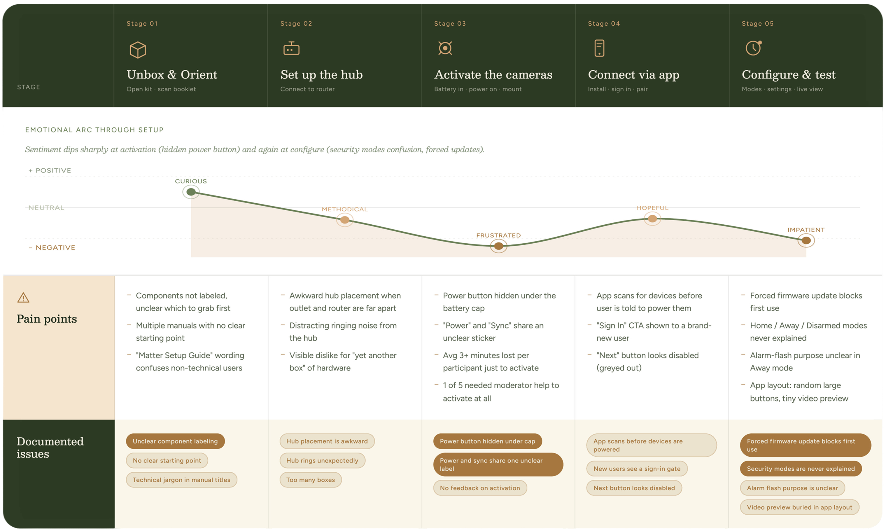
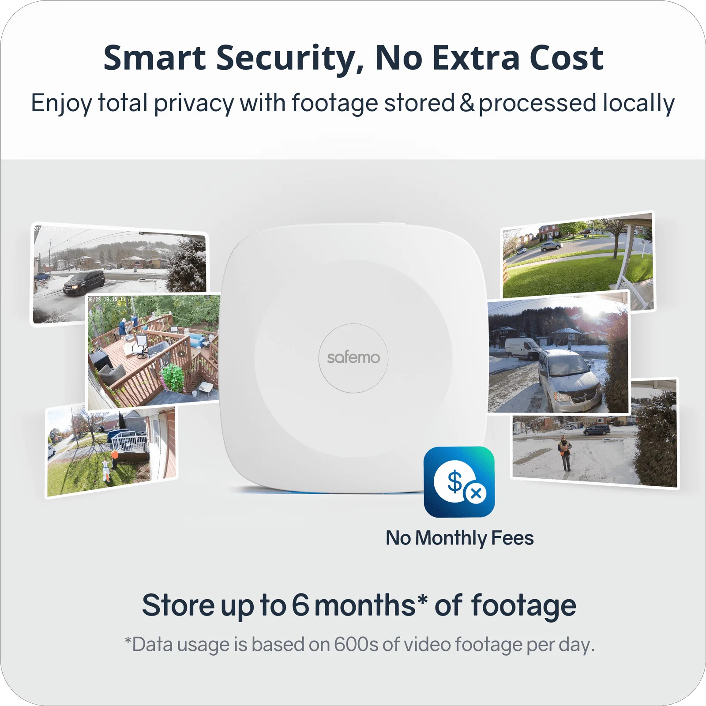
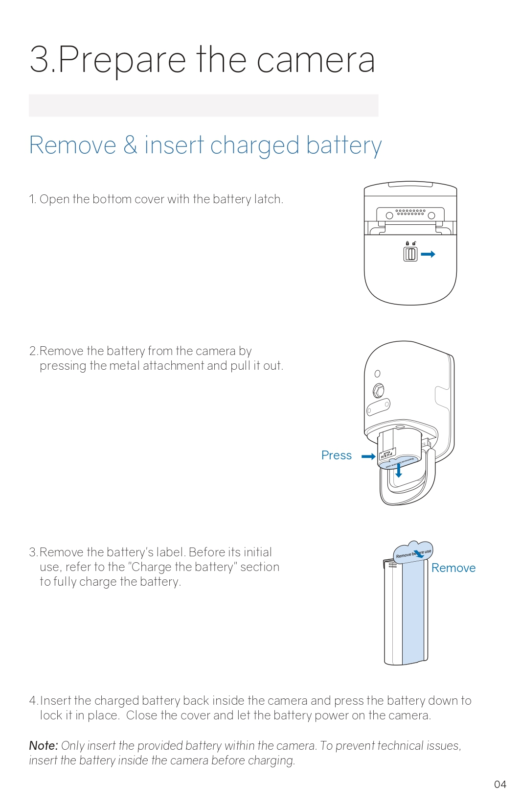

A privacy-first product that users couldn't use.
Safemo's wire-free security camera launched with a privacy-first promise: local storage, on-device AI, no cloud, no monthly fees. It missed its sales projections and support tickets were spiking. The product had been engineered around a real value proposition, but something between the box and the user's experience was breaking.
Over two rounds of longitudinal mixed-methods research, the team cut setup time from 90 minutes to under 30, and lifted likelihood to recommend ratings from 3.3 to 8.7. The framing and analytical choices I pushed for turned early warnings into decisions the team acted on.
The problems were visible, but not legible.
When it was first launched in June 2024, Safemo's Set PI wireless smart security camera was met with appraisals from the tech coverages, being cited as having "advanced features and ease of use". However, the product fell short of its sales projections in the first month, and the customer support team reported a spike in support tickets especially with regard to the camera's setup process.
After an initial stakeholder meeting, we found that while the product team had a clear picture of their target users — tech-savvy, privacy-conscious consumers — the camera had never left the lab environment. They had not tested the product or its core features with real users. The market gap for a local-storage security camera does exist, but whether the privacy-first story actually resonated with buyers was still an open question.
Research questions
Can users complete hardware installation and app setup without outside help?
What friction surfaces after setup, during sustained daily use?
Does the local-storage privacy model resonate with users enough to justify the setup trade-offs compared to its competitors?
Are the AI features discoverable and perceived as valuable by real users?
Two rounds, layered methods, deliberate sequencing.
The study was designed by a senior researcher as a two-round longitudinal program. Round two would repeat the structure of round one after the team implemented changes, so we could test whether our framing was right.
- Screener survey
- Eligibility criteria review
- Participant confirmation
- Context explanation
- Background & baseline interview
- User completes setup task
- Observer records issues
- Setup experience debrief
- General experience questions
- Privacy considerations & NPS
- Daily survey prompts
- 2-week general use log
- AI feature experience review
- Follow-up interview
My contributions
Drafted all four study instruments with one rule: never waste a participant's time.
I wrote the screener, usability moderation guide, diary study prompts, and follow-up interview guide. We were asking people to host a camera in their home for two weeks, so any unnecessary friction in the protocol would quietly degrade data quality.
Moderated in-home sessions and ran diary study follow-ups on a consistent daily schedule.
During usability sessions I stayed non-directive even when participants were visibly stuck. Stepping in would have cleaned up the data in ways that hid real friction. I also kept diary check-ins on a regular schedule and responded to participant issues as they came up.
Built a synthetic user so the client could query findings in real time mid-analysis.1
The client asked for a progress update before analysis was complete. I cleaned and labeled the interview quotes, fed them into NotebookLM, and created a synthetic user grounded in what actual participants said.
Argued for ordering findings chronologically along the user journey rather than by severity.
If stakeholders could walk through the findings the same way a user walks through the product, it would be easier to map each issue to a specific touchpoint. It also made the findings harder to pull out of context and quietly deprioritize.
Three findings that did most of the work.
Out of dozens of issues identified across setup, daily use, AI features, and privacy perception, three findings shaped what happened next.
Setup was failing before users ever got to experience the product.
Unclear component labeling, a manual split across four separate guides with ambiguous sequencing, and a power button hidden under the battery cap combined to create a setup process that averaged 90 minutes. One participant could not activate the camera without moderator help.
It was an abandonment risk sitting at the front door of the product.

The privacy value proposition was not landing the way the team expected.
Local storage and on-device AI were the strategic centerpiece of the product. The research showed users either barely noticed the privacy feature (because setup never emphasized it), questioned whether an unknown company's privacy claims could be trusted, or cared less about privacy for outdoor cameras than the positioning assumed.
The core features did not gain enough tractions due to poor exposure and misaligned user expectations.
Users were confused by the AI features being labeled as "extensions" in the app. Participants associated the word with plugins or third-party integrations, not with core functionality. What the team had intended as a technical descriptor was actively making the features feel peripheral and optional.
But the label wasn't the only issue. One core feature was buried deep enough that most participants never found it during two weeks of daily use without a researcher prompt. Even when users did reach the features, expectations were frequently misaligned.
| P1 | P2 | P3 | P4 | P5 | |
|---|---|---|---|---|---|
| Core Feature 1 | Technical difficulty | Not useful | Technical difficulty | Useful | Useful |
| Core Feature 2 | Neutral | Not useful | Not useful | Not useful | Not useful |
| Core Feature 3 | Expectation mismatch | Expectation mismatch | Not useful | Technical concerns | Neutral |
| Core Feature 4 | Did not find | Useful | Did not find | Did not find | Did not find |
What changed, and what I owned in Round 2.
The round-one findings went to stakeholders with a concrete set of recommendations: add explicit instructions for activating the camera's battery, rename the AI "extensions," restructure app navigation, and reposition privacy messaging around specific use cases. We also suggested revisions to the manual and the in-app tutorial so users would receive sequential, consistent guidance through setup. The team listened to our feedback, and in 2 months, they adopted most of the recommendations (7 out of 9) in the next round of product updates.
Messaging was updated to emphasise the economic value of local storage: no ongoing subscription fees, footage stays on-device.

A dedicated step-by-step section on battery insertion was added to the manual, resolving the single biggest setup blocker identified in Round 1.

I owned Round 2 end to end: recruitment, moderation, diary study coordination, data collection, analysis, and the final report. Round 2 was the test of whether Round 1's framing had been right. If the setup findings were real, setup time should drop. If the navigation problems were real, discoverability should improve. The results validated the framing.
Significant friction in setup and daily use
- Instruction sequence across manual and app was inconsistent
- Participants took over 3 minutes to activate cameras
- Users confused by security modes with no explanations
- Core functionalities lacked visibility
- Users unhappy and unlikely to recommend
Setup streamlined, satisfaction restored
- All participants finished setup in under 30 minutes
- Little to no friction in camera activation
- User education on security modes improved onboarding
- Integrated features hub increased discoverability
- Users voluntarily praised setup as easier than other cameras
For the final stakeholder presentation, I proposed a before-and-after slide that put Round 1 and Round 2 metrics side by side, and I chose which metrics to highlight. This was deliberate. The team had acted on our Round 1 recommendations in good faith, and I wanted the presentation to visibly credit them for doing so. Stakeholders who see their decisions validated by research are more likely to commission more research. That is as much a research operations decision as it is a communication one.
Lessons and reflections I carry forward.
The project merited both generative research (does the privacy story resonate with real buyers?) and evaluative research (can users set the camera up?). Time constraints pushed us toward evaluation. Given more resources, I'd have added concept testing against competitor products to better understand the market gap before jumping to usability.
The clients wanted high engagement with participants throughout the study. Rather than pushing back, my mentor maintained the relationship through a consistent communication channel and daily updates. I saw firsthand that keeping stakeholders in the loop builds trust incrementally, and that trust is what gets findings acted on.
Rigorous recruitment criteria and an in-home study setup made recruitment the single most time-consuming step. A reminder that no matter how strong the research design is, it fails without the right people to talk to, and that finding those people takes more time than most plans account for.